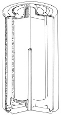

Piller, negatif yüklü minik atom-altı tanecikleri olan elektronları üretmek için birbiriyle tepkimeye giren maddeler olan elektrokimyasal depolarıdır. Bir kaynaktan diğerine elektronların akışı, lambalarımıza, televizyonlarımıza, arabalarımıza, kameralarımıza, uydularımıza, cep telefonlarımıza ve bilgisayarlarımıza güç veren elektrik akımlarını yaratır. Elektronlar, devre denen iletken yollar yoluyla akarlar. Evinizdeki kablolar, devrelerin örnekleridir.

Çoğu pilin dört parçası vardır: Negatif yüklü bir anot, pozitif yüklü bir katot, elektrokimyasallar ve elektrolitler. Elektrokimyasalların tepkimesi, elektronları pilin bir tarafına, anot yaratarak (genelde eksi sembolüyle işaretlidir) iter. Pilin diğer tarafında elektronların eksikliği katot (genelde artı sembolüyle işaretlidir) yaratır. Normalde, elektronlar yükü dengelemek için anottan katoda doğru akar, ama pilin ortasındaki elektrolitler bir blok gibi hareket eder. Onun yerine elektronlar anotu katota bağlayan bir devre yoluyla yol almalıdırlar.
Eğer anot ve katot birbirine doğrudan bağlılarsa, elektrokimyasallar elektronları mümkün olduğu kadar çabuk üreteceklerdir ve pil yükünü çabucak kaybedecektir. Ama çoğu pil, elektronların aşamalı olarak akmasına izin veren lamba, TV, radyo gibi bir elektrik yükleyicisine bağlıdırlar. Ancak sonunda elektrokimyasallar elektron üretmeyi durduracaklardır. Tekrar yüklenebilir pillerde bir dış güç kaynağı, anot ve katottaki elektronların dengesini geri yükleyerek elektrokimyasalların geriye doğru çalışmasına neden olan elektronların akışını tersine çevirir. Bu, geceleri cep telefonunuzu şarja taktığınızda cep telefonunuzdaki pile olan şeydir.
EK BİLGİLER:
1. MÖ. 250’ye kadar giden ilkel pillerin ilk kez Bağdat’ta var olmuş olabileceğine dair kanıtlar vardır.
2. İlk modern pil, 1800’de Alessandro Volta tarafından icat edildi. Voltaj ve volt kelimeleri onun adından türetildi.
3. Güç kâğıdı adı verilen yeni tip bir pil, mevcut şartlarda mükemmel hale getiriliyor. Bu, çoğu yüzey üzerine basılabilen ve güç üreten mürekkep hücreleri şeklindeki ince, esnek bir pildir.
4. Dünya genelinde pil sanayi her yıl kırk sekiz milyar dolar satış hacmi yaratmaktadır.